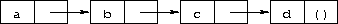
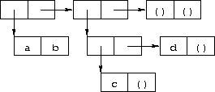

这章是为Scheme语言新手准备的入门引导。 从本章开始，如果你坐在电脑前对着Scheme交互式系统，跟着示例代码做实验，你会学到更多的东西。
当你完成了本章的阅读和练习，你就应该可以开始使用Scheme语言了。 你将学到Scheme程序的语法，和它是如何运行的，并且了解简单的数据结构和控制机制。
大多数Scheme系统提供一个交互式编程环境，用来简化程序的开发和实验。 最简单的Scheme交互遵循“读取-求值-打印”循环。 一个程序（通常叫做读取-求值-打印循环（read-evaluate-print loop）或者REPL） 读取每一个你从键盘输入的表达式，对它求值，然后打印出这个值。
通过使用Scheme交互系统，你可以输入一个表达式并且立刻查看到它的值。 你可以定义一个过程并且把它应用在参数上看它如何工作。 你可以输入由一组过程定义组成的整个程序，并且测试它，不需要切换出这个系统。 当你写的程序开始变长的时候，更方便的做法是， 把它写在文件里（用文本编辑器）， 然后在交互式系统中加载这个文件，并交互式测试这个程序。 在大多数Scheme系统中，使用一个未标准化的过程来加载一个文件， 这个过程叫做load，接受一个字符串参数用来指示要加载的文件。 把你的程序写在文件中有很多好处：你有机会更仔细的构造你的程序， 你可以不用重新输入整个程序就修改其中的错误，并且你可以保存一个副本留待以后使用。 大多数Scheme的实现对待从文件中加载的表达式和从键盘录入的表达式是一样的。
虽然Scheme提供了多种输入输出的过程，但REPL能够负责读取表达式和打印它们的值。 这能够让你把注意力集中在写程序上而不需要担心他们的结果将会如何显示。
这一章和本书之后的示例遵循统一格式。
你需要从键盘输入的内容将首先给出，可能扩展成多行。
这个表达式的值将在 后面给出，读作“求值得：”。
定义和返回“未确定值”的表达式后面的将会被省略。
后面给出，读作“求值得：”。
定义和返回“未确定值”的表达式后面的将会被省略。
示例代码使用了漂亮并能传达程序结构的风格进行格式化。 由于每个表达式和它的子表达式的关系都很清晰的呈现出来，代码会非常易于阅读。 Scheme忽略缩进和断行，所以不需要遵循某个特定的风格。 重要的是建立一个风格并且坚持下去。 Scheme实际上把每个程序都视为一行，子表达式从左到右依次排列。
如果可以，你最好现在就打开一个Scheme交互系统并且键入你阅读到的代码。 最简单的Scheme表达式之一是常量字符串。 试试在提示符后面输入"Hi Mom!"（包括双引号）。 系统应该回应你"Hi Mom!"；任何常量的值都是它自己。
"Hi Mom!" "Hi Mom!"
这里有一组表达式，和Scheme给出的反馈。 本章后面的小节将会解释它们，但是现在用它们来练习一下Scheme交互模式。
"hello" "hello"
42 42
22/7 22/7
3.141592653 3.141592653
+ #<procedure>
(+ 76 31) 107
(* -12 10) -120
'(a b c d) (a b c d)
小心不要漏掉任何单引号（ ' ）、双引号和小括号。 如果你在最后一个表达式中漏掉了一个单引号，你可能会收到一个代表异常发生的信息。 你只需要再试一次即可。 如果你漏掉的是一个配对的小括号或者双引号，系统将还在等待你输入。
这里有更多的表达式，你可以尝试想出每个表达式的意思，或者等之后的章节来揭示答案。
(car '(a b c)) a
(cdr '(a b c)) (b c)
(cons 'a '(b c)) (a b c)
(cons (car '(a b c))
(cdr '(d e f))) (a e f)
如你所见，Scheme表达式可以被扩展到多行。 Scheme系统通过括号和引号配对了解它是否得到了整个表达式。
(define square
(lambda (n)
(* n n)))
过程square计算任意数n的平方n2 n。 在本章的稍后部分我们将对组成这个表定义的表达式进行更多的解释。 现在我们可以说，define建立变量绑定，lambda创建过程。*是乘法过程的名字。 注意这些表达式的形式。 所有结构化形式都用小括号包围起来，并且使用前缀表达式记法，就是说，一个操作符后面跟着它的参数。 如你所见，连简单的算术运算乘法*也是如此。
来试着用一下square过程。
(square 5) 25
(square -200) 40000
(square 0.5) 0.25
(square -1/2) 1/4
虽然下一个定义很简单，你还是把它输入到一个文件中。我们假设你把这个文件命名为"reciprocal.ss"。
(define reciprocal
(lambda (n)
(if (= n 0)
"oops!"
(/ 1 n))))
这个过程reciprocal，对任意的n ≠ 0计算1/n。 对于n = 0，reciprocal返回字符串"oops!"。 回到Scheme中用load过程加载你的文件。
(load "reciprocal.ss")
最后，尝试使用我们刚刚定义的这个过程。
(reciprocal 10) 1/10
(reciprocal 1/10) 10
(reciprocal 0) "oops!"
(reciprocal (reciprocal 1/10)) 1/10
下一小节我们将深入讨论Scheme表达式的细节。 学习本章的过程中要时刻记住，你的Scheme解释器是学习Scheme最有用的工具。 每做一个书上的示例练习，都紧跟着做一些自己的练习。 在一个交互式的Scheme系统中，尝试练习的代价真的很小，通常也就是键入代码的时间花销而已。
最简单的Scheme表达式是常量数据对象，例如字符串、数值、符号和列表。 Scheme支持其他的对象类型，但是这些大多数情况下够用了。 之前章节中我们见过了一些关于字符串和数值的示例。
我们稍微进一步讨论一下数值类型。 数值是常量。如果你输入了一个数值，Scheme直接把它原样反馈给你。 下面的例子展示Scheme支持多种类型的数值。
123456789987654321 123456789987654321
3/4 3/4
2.718281828 2.718281828
2.2+1.1i 2.2+1.1i
Scheme数值包括精确和不精确整数、有理数、实数，和复数。 精确整数和有理数拥有任意的精度，就是说它们可以是任意大小的。 不精确整数通常在内部用IEEE标准浮点数表现形式来表示。
Scheme提供了 +, -, *, / 来对应算术过程。 每个过程都接受两个参数。 下面的表达式称作过程应用, 因为它们把一个过程应用于一组参数之上。
(+ 1/2 1/2) 1
(- 1.5 1/2) 1.0
(* 3 1/2) 3/2
(/ 1.5 3/4) 2.0
Scheme即使对普通的算术操作也采用了前缀表达式记。 任何过程应用，不管这个过程接受0、1或更多参数，都写作这种形式：(procedure arg ...)。 这个规则简化了表达式的语法，无论什么操作都使用同一种记法， 并且操作的优先级和结合性方面没有任何复杂的规则。
过程的应用可以嵌套，这种情况下最内层的值被最先求出。 所以我们可以把上面给出的算术过程嵌套起来应用，来计算更复杂的公式。
(+ (+ 2 2) (+ 2 2)) 8
(- 2 (* 4 1/3)) 2/3
(* 2 (* 2 (* 2 (* 2 2)))) 32
(/ (* 6/7 7/2) (- 4.5 1.5)) 1.0
这些示例演示了如何把Scheme当做四则运算计算器来使用。 Scheme支持更多其他的算术过程，但我们不打算在这章里进行讨论。 现在可能是一个去6.4节体验一下的好时机。
简单数值对象在大多数任务中已经足够用了， 但是有时候我们会需要包含两个或多个值的复合数据结构。 在很多语言中，最基础的复合数据结构是数组。在Scheme中，是列表。 列表写作一个用小括号包围起来的对象序列。例如：(1 2 3 4 5) 是一个数值列表， ("this" "is" "a" "list") 是一个字符串列表。 列表不需要只包含同一种对象，所以(4.2 "hi")这样包含一个数值和一个字符串的列表也是合法的。 列表可以嵌套（可以包含其他的列表），所以((1 2) (3 4))也是个合法的列表，它包含两个元素，每个元素都是一个包含两个元素的列表。
你可能注意到列表很像过程应用，并且想知道Scheme如何区分他们。 换句话说，Scheme如何区分一个对象列表(obj1 obj2 ...) 和一个 过程调用(procedure arg ...)？
在某些情况下，区分是比较明显的。 一个数值列表 (1 2 3 4 5) 很难和一个过程应用搞混， 因为1是一个数值，不是一个过程。 所以答案可能是Scheme查看列表或过程应用的第一个元素，并且根据它是不是一个过程来做决定。 这个回答并不够好，因为我们可能真的想要把一个合法的过程应用比如 (+ 3 4) 当做列表数据而不当做过程应用。 我们用 quote来实现这个目的。
(quote (1 2 3 4 5)) (1 2 3 4 5)
(quote ("this" "is" "a" "list")) ("this" "is" "a" "list")
(quote (+ 3 4)) (+ 3 4)
quote 强制把一个列表当做数据来看待。尝试把上面表达式中的quote去掉，前两个表达式你会收到一个异常消息， 第三个你会得到一个不正确的结果（7）。
由于 quote 在Scheme中使用的太过频繁，Scheme规定一个单引号（ ' ）放在一个表达式前面来作为 quote的简写形式。
'(1 2 3 4) (1 2 3 4)
'((1 2) (3 4)) ((1 2) (3 4))
'(/ (* 2 -1) 3) (/ (* 2 -1) 3)
两种形式都代表 quote 表达式。 我们通常称一个在quote中包围着的表达式是被 引用（quoted） 的。
quote 表达式不是 过程应用，因为它的子表达式被禁止求值。 这是一个完全不同的语法形式。 除了过程应用和quote表达式外，Scheme还支持一些其它的 语法形式。 每一种语法形式的求值都是不同的。 还好语法形式的数量并不太多。我们将会在这一章的后续部分看到更多的其他语法形式。
不是所有的 quote 表达式都包含列表。试一下下面这个表达式，加或者不加 quote 。
(quote hello) hello
符号 hello必须加上quote以防Scheme把 hello 当做一个 变量。 Scheme中的符号和 变量和数学表达式、方程中的符号和变量很类似。 当我们计算一个数学表达式 1 - x 在x取某值时的结果时，我们把 x 当做一个变量。 而对于x2 - 1 = (x - 1)(x + 1)代数方程来说，我们把 x 视作符号（事实整个方程都视为符号）。 如同quote让Scheme把一个小括号形式视为列表而非过程调用一样，quote能让Scheme把一个标识符视为符号而非变量。 符号不仅用来在方程或程序的符号表示中代表变量，还经常用来表示自然语言的句子中的单词。
你可能想知道为什么过程应用和变量要与列表和符号公用同一套记法。 这是因为这样能让Scheme把程序表示成Scheme数据，简化Scheme的解释器、编译器、编辑器和其他工具的书写。 在12.7节有一个Scheme解释器的演示程序，是由Scheme自身编写的。 很多人相信这是Scheme最重要的特性之一。
数值和字符串也可以被quote。
'2 2
'2/3 2/3
(quote "Hi Mom!") "Hi Mom!"
数值和字符串反正也会被当成常量对待，所以对它们的quote是不必要的。
现在我们来讨论一些操作 列表的Scheme过程。 有两个基础过程用来拆分列表 car 和cdr (读作 could-er)。 car返回一个列表的第一项，cdr 返回列表余下的部分。 （car和cdr这两个名字是从实现了Lisp语言的第一台电脑IBM 704上支持的操作继承而来的）。 它们都要求参数是一个非空列表。
(car '(a b c)) a
(cdr '(a b c)) (b c)
(cdr '(a)) ()
(car (cdr '(a b c))) b
(cdr (cdr '(a b c))) (c)
(car '((a b) (c d))) (a b)
(cdr '((a b) (c d))) ((c d))
列表的第一项通常叫做这个列表的car， 余下的部分通常叫做这个列表的cdr。 只有一个元素的列表的cdr是 ()，空表。
过程 cons 用来构建列表。 它接受两个参数，第二个参数通常是一个列表，这种情况下 cons返回一个列表。
(cons 'a '()) (a)
(cons 'a '(b c)) (a b c)
(cons 'a (cons 'b (cons 'c '()))) (a b c)
(cons '(a b) '(c d)) ((a b) c d)
(car (cons 'a '(b c))) a
(cdr (cons 'a '(b c))) (b c)
(cons (car '(a b c))
(cdr '(d e f))) (a e f)
(cons (car '(a b c))
(cdr '(a b c))) (a b c)
car和cdr经常被用于名词，cons而经常被用于动词。 把一个元素添加到一个列表的头部来创建一个新的列表，被称作 consing 这个元素到这个列表上。
注意在 cons描述第二个参数时我们使用了“通常”这个词。 cons实际上构建的是一个 序对（pairs），而一个序对的cdr并不必是一个列表。 一个列表是个序对的序列，每个序对的cdr都是序列中下一个序对。
">
一个正规列表 的最后一个序对的cdr应该是一个空表。 否则，这个序对序列形成的叫做 非正规列表。 更形式上来说，空表是正规列表，任何一个cdr为正规列表的序对都是一个正规列表。
非正规列表用 点对记法来输出，用一个句号，或者 点号， 放在列表的最后一个元素之前。
(cons 'a 'b) (a . b)
(cdr '(a . b)) b
(cons 'a '(b . c)) (a b . c)
由于这种打印方法，一个cdr不是列表的序对通常被称为 点对。 实际上每个cdr是列表的序对都能写成点对的形式，虽然在打印正规列表的时候通常都是不带点号的。
'(a . (b . (c . ()))) (a b c)
list过程和 cons过程比较相似，除了它是接受任意数量的参数，并且总是构建一个正规列表。
(list 'a 'b 'c) (a b c)
(list 'a) (a)
(list) ()
6.3节提供了关于列表和操作列表的Scheme过程的更详尽信息。 现在是一个很好的机会去那一节熟悉那里提到的其它过程。
| a. | 1.2 × (2 - 1/3) + -8.7 |
| b. | (2/3 + 4/9) ÷ (5/11 - 4/3) |
| c. | 1 + 1 ÷ (2 + 1 ÷ (1 + 1/2)) |
| d. | 1 × -2 × 3 × -4 × 5 × -6 × 7 |
| a. | (cons 'car 'cdr) |
| b. | (list 'this '(is silly)) |
| c. | (cons 'is '(this silly?)) |
| d. | (quote (+ 2 3)) |
| e. | (cons '+ '(2 3)) |
| f. | (car '(+ 2 3)) |
| g. | (cdr '(+ 2 3)) |
| h. | cons |
| i. | (quote cons) |
| j. | (quote (quote cons)) |
| k. | (car (quote (quote cons))) |
| l. | (+ 2 3) |
| m. | (+ '2 '3) |
| n. | (+ (car '(2 3)) (car (cdr '(2 3)))) |
| o. | ((car (list + - * /)) 2 3) |
">
(cons 1 (cons '(2 . ((3) . ())) (cons '(()) (cons 4 5))))
我们来讨论一下Scheme是如何对你输入的表达式进行求值的。 我们已经建立了 常量对象的求值规则，例如字符串和数值：它们的值就是它们自身。 你可能已经在心里想出了形如(procedure arg1 ... argn)这样的 过程应用的求值规则， 其中procedure 是一个表示Scheme过程的表达式，而 arg1 ... argn 是它所需要的参数。一个可能的规则如下：
">
例如，考虑这个简单的过程应用： (+ 3 4)。 + 的值是加法过程，数值3的值是3，数值4的值是4。 把加法过程应用于3和4上，得到7.所以求值结果是对象7。
逐层的使用这个规则，我们能够得到嵌套表达式 (* (+ 3 4) 2)的值。 *的值是乘法过程，(+ 3 4)能够算出结果是7，数值2的值是2。 7乘以2等于14，所以答案是14。
这个规则对过程应用有效，但是对quote表达式无效。 因为过程应用的子表达式会被求值，而 quote 表达式的子表达式不会求值。 quote 表达式的求值甚至比常量对象的求值还简单。 形如(quote object)这样的 quote 表达式的值就是 object。
常量对象、过程应用和 quote 表达式只是Scheme提供的众多语法形式中的三种。 幸运的是，只有少量的语法形式需要Scheme程序员直接理解，它们就是核心（core） 语法形式。 其余的语法形式是 syntactic extensions定义的， 本质上依赖于 核心语法形式。 我们将会在本章讨论剩下的核心语法形式和一些语法扩展。 3.1节将概要的介绍核心语法形式和语法扩展机制。
在我们继续接触更多语法形式和过程之前，要提两点和过程应用求值相关的事情。 首先，上面给出的求值过程是冗余的，它要求子表达式从左到右求值。就是说 procedure要在arg1之前求值， arg1要在arg2之前求值，以此类推。 但是实际上这是不必要的。 Scheme的求值器可以对表达式以任意顺序求值，从左到右、从右到左，或者其他任何顺序。 事实上，甚至在同一个实现的不同过程应用中，子表达式都有可能以不同的顺序求值。
第二点是procedure和arg1 ... argn的求值方式是相同的。 虽然procedure经常是一个表示过程的变量，但并不总是这样。 Exercise 2.2.3让你求((car (list + - * /)) 2 3)的值。 这里procedure是(car (list + - * /))。 (car (list + - * /))的值是加法过程，就跟procedure直接写成+一样。
((car (cdr (list + - * /))) 17 5)
假设expr是一个表达式，其中包含一个变量var。 再假设，当我们求值expr的时候，我们希望var的值为val。 例如，我们可能希望在求值(+ x 3)的时候让x等于2， 或者希望在求值(+ 2 y)的时候让y等于3。 下面的示例展示如何用let语法形式做到这一点
(let ((x 2))
(+ x 3)) 5
(let ((y 3))
(+ 2 y)) 5
(let ((x 2) (y 3))
(+ x y)) 5
let语法形式包括一个变量-表达式对的列表，后面跟着一系列表达式作为let的主体（body）。 let表达式的一般形式如下：
(let ((var expr) ...) body1 body2 ...)
let表达式通常用来简化包含两个相同子表达式的表达式。 这么做同时也保证了公共表达式只被计算一次。
(+ (* 4 4) (* 4 4)) 32
(let ((a (* 4 4))) (+ a a)) 32
let表达式的绑定部分的小括号通常用中括号来代替。
(let ([list1 '(a b c)] [list2 '(d e f)])
(cons (cons (car list1)
(car list2))
(cons (car (cdr list1))
(car (cdr list2))))) ((a . d) b . e)
Scheme对小括号和中括号的处理是一样的。 中括号必须和中括号配对，小括号必须和小括号配对。 我们在let（你将会看到还有其它的一些标准语法形式）中使用中括号，来提高可读性， 尤其是如果不用它我们将会遇到两个或更多左小括号“（”连续出现的情况。
由于过程应用中第一个位置的表达式求值实际上和其他表达式没有区别，因此let绑定的变量同样可以放在这个位置上。
(let ([f +])
(f 2 3)) 5
(let ([f +] [x 2])
(f x 3)) 5
(let ([f +] [x 2] [y 3])
(f x y)) 5
由let绑定的变量只在let主体中可见。
(let ([+ *])
(+ 2 3)) 6
(+ 2 3) 5
这样还算不错，因为我们并不想在所有地方让+取代乘法运算。
let表达式是可以嵌套的。
(let ([a 4] [b -3])
(let ([a-squared (* a a)]
[b-squared (* b b)])
(+ a-squared b-squared))) 25
我们用let表达式嵌套的绑定同一个变量，只有里面的let绑定的变量才在最里面的主体中可见。
(let ([x 1])
(let ([x (+ x 1)])
(+ x x))) 4
外围的let表达式把x绑定成了1，范围限制在它的主体内，也就是内层的那个 let表达式。 内层的let表达式把x 绑定成了 (+ x 1)，范围限制在它的主体内，也就是 (+ x x)这个表达式。 (+ x 1)值是什么？ 虽然(+ x 1)出现在了外围let表达式的主体中， 但是不在内层let表达式的主体中, x的值应该是1，(+ x 1) 的值是2。 那么(+ x x)呢？ 它出现在内外两个let表达式的主体中。 只有内层的x绑定是可见的。所以x的值为2， (+ x x)的值是4。
我们称内层的x 绑定遮蔽（shadow）了外层绑定。 let绑定的变量在整个let范围内都可见，除非被遮蔽。 一个变量绑定能够可见的范围被称作作用域（scope）。 这个例子中外面这个x的作用域是外面这个let表达式的范围， 减去里面let表达式的作用域，因为在那里它被第二个x遮蔽了。 这种形式的作用域被称作 词法作用域， 因为每一个绑定的作用域都可以直接通过程序的字面分析直接得到。
遮蔽可以通过给变量起不同的名字来避免。 上面那个表达式可以重写，让内层let绑定的那个变量叫做new-x。
(let ([x 1])
(let ([new-x (+ x 1)])
(+ new-x new-x))) 4
尽管起不同的名字有时候能够预防混乱产生，但是遮蔽其实在防止由“旧的”值造成的事故方面是非常有效的。 比如，对于前面那个示例的最初版本而言，它能够阻止我们不小心在最内层的let中使用了最外层的x。
| a. | (+ (- (* 3 a) b) (+ (* 3 a) b)) |
| b. | (cons (car (list a b c)) (cdr (list a b c))) |
(let ([x 9])
(* x
(let ([x (/ x 3)])
(+ x x))))
| a. |
(let ([x 'a] [y 'b]) |
| b. |
(let ([x '((a b) c)]) |
在表达式(let ([x (* 3 4)]) (+ x x))中，变量 x被绑定为(* 3 4)的值。 如果我们想要x被绑定成(/ 99 11)时(+ x x)的值呢？ 这里我们需要一个新的let表达式。 当let主体很复杂的时候，总是重复它显然不是很方便。
我们可以用lambda语法形式取代之来创建新的 过程，让x作为参数，并且主体和let表达式主体保持一致。
(lambda (x) (+ x x)) #<procedure>
lambda表达式的一般形式如下：
(lambda (var ...) body1 body2 ...)
var ...是这个过程的形式参数， 而那一系列表达式body1 body2 ...是这个过程的主体。 （事实上，真正的一般形式比这个要更通用，你后面会看到）。
过程和数值、字符串、符号、序对都差不多。但是它们不具备有意义的输出形式， 所以本书使用了>#<procedure>这样的记法来代表一个表达式的值是个过程。
对一个过程做的最常规的事情就是把它应用在一个或多个值上。
((lambda (x) (+ x x)) (* 3 4)) 24
这和其他的过程应用没有任何的区别。 这个过程应用中，过程就是 (lambda (x) (+ x x))的值， 而唯一的参数则是(* 3 4)的值，也就是12。 参数的值，或者称作实参，被绑定在lambda中的形参上， 就如同lambda表达式绑定变量的值一样。 在这个示例中，x 被绑定为12，于是(+ x x)的值是24。 因此把12作用在这个过程上的结果是24。
因为过程就是对象，我们可以把一个过程当做一个变量的值，从而多次使用这个过程。
(let ([double (lambda (x) (+ x x))])
(list (double (* 3 4))
(double (/ 99 11))
(double (- 2 7)))) (24 18 -10)
这里，我们把变量double绑定到一个过程上，然后用这个过程给三个不同的值做了翻倍计算。
由于这个过程要把实参传递给+，它期待的参数类型应该是数值型。 一般来说，实参可以是任何类型的对象。例如我们考虑一个类似的过程，用cons替换了+。
(let ([double-cons (lambda (x) (cons x x))])
(double-cons 'a)) (a . a)
留意double和double-cons的相似性， 你应该不会太惊讶的发现，可以增加一个参数来让它们合成一个过程。
(let ([double-any (lambda (f x) (f x x))])
(list (double-any + 13)
(double-any cons 'a))) (26 (a . a))
这个示例演示了一个过程可能接受超过一个参数，另外传递到一个过程中的参数本身可以是一个过程。
和let表达式类似，lambda表达式在被嵌套于其它lambda或let表达式中的时候， 甚至会更有趣一些。
(let ([x 'a])
(let ([f (lambda (y) (list x y))])
(f 'b))) (a b)
在lambda表达式中的那个x引用了在最外层的那个let中绑定的x。 这个变量x被称为在这个lambda表达式中自由存在， 或者称为这个lambda表达式中的自由变量。 变量y并不是对这个lambda表达式自由存在的，因为它被这个lambda表达式绑定了。 在一个lambda表达式中自由存在的变量应该被外层的lambda或 let表达式绑定，除非这个变量是被这个表达式之外的某处绑定的，就像原始过程的名字一样。我们在本节后面会进行讨论。
当一个过程在它的自由变量被绑定的作用域之外来调用的时候，例如下面的表达式，会发生什么呢？
(let ([f (let ([x 'sam])
(lambda (y z) (list x y z)))])
(f 'i 'am)) (sam i am)
答案是，当这个过程被应用的时候，当初创建它时生效的那个（自由变量的）绑定依然有效。 即使在过程应用时有另一个x的绑定可见，情况依然如此（译注：生效的是当初创建时的那个绑定）。
(let ([f (let ([x 'sam])
(lambda (y z) (list x y z)))])
(let ([x 'not-sam])
(f 'i 'am))) (sam i am)
在这两种情况下，f过程内部的x的值都是sam。
顺便提一下，一个let表达式和一个“把lambda表达式直接应用于一系列参数上”的表达式没有本质区别。 例如，下面两个表达式是等价的。
(let ([x 'a]) (cons x x)) ≡ ((lambda (x) (cons x x)) 'a)
试试上let就是由两个核心语法形式：lambda和过程应用所定义出来的语法扩展。
(let ((var expr) ...) body1 body2 ...)
和下面的表达式是等价的。
((lambda (var ...) body1 body2 ...)
expr ...)
在 3.1节中有关于核心语法形式和语法扩展更详细的介绍。
正如上面提到的，lambda的一般形式比之前我们见到的形式要更复杂一些， 在形声明上，(var ...)并不一定要求是一个确定的列表，甚至都不一定是一个列表。 形参声明可以是下面三个形式中的任何一个：
第一种情况下，必须提供恰好n个实参，并且每个变量绑定在对应的实参上。 第二种情况下，任何数量的实参都是合法的；所有的实参被放在一个列表中，单个变量直接绑定这个列表。 第三种情况是前两种情况的混合体。 必须至少提供n个实参，变量 var1 ... varn被绑定到对应的实参上， 而varr则被绑定为剩下的所有实参组成的列表。 在第二、三种情况下，varr有时被称作“余项（rest）”参数，因为在单独命名的参数后面剩下的所有参数都绑定到它上面。
为了弄清lambda表达式更一般语法的语法，我们考虑一些示例。
(let ([f (lambda x x)])
(f 1 2 3 4)) (1 2 3 4)
(let ([f (lambda x x)])
(f)) ()
(let ([g (lambda (x . y) (list x y))])
(g 1 2 3 4)) (1 (2 3 4))
(let ([h (lambda (x y . z) (list x y z))])
(h 'a 'b 'c 'd)) (a b (c d))
在前两个示例中，过程 f 接受任意数量的参数。 这些参数被自动组成一个列表并绑定给变量x，f的值就是这个车标。 第一个示例中，参数是1, 2, 3, 4，所以结果就是 (1 2 3 4) 。 第二个示例中，没有参数，所以结果是一个空表 () 。 在第三个示例中的过程 g 的值，是一个列表，它的第一个元素就是第一个参数，第二个元素则是参数表里剩下的所有元素组成的列表。 过程 h 也是类似的，只是把第二个参数也区分出来了。 f 接受任意数量的参数，g 必须接受至少一个参数， 而 h 必须接受至少两个参数。
| a. |
(let ([f (lambda (x) x)]) |
| b. |
(let ([f (lambda x x)]) |
| c. |
(let ([f (lambda (x . y) x)]) |
| d. |
(let ([f (lambda (x . y) y)]) |
| a. | (lambda (f x) (f x)) |
| b. | (lambda (x) (+ x x)) |
| c. | (lambda (x y) (f x y)) |
| d. |
(lambda (x) |
| e. |
(lambda (x) |
| f. |
(lambda (x) |
由 let 和 lambda 表达式绑定的变量在它们所在表达式的外部是不可见的。 假设你创建了一个对象，比如是个过程，你想让它在任何地方都可以访问，就像 + 或 cons 那样。 你需要的手段叫做 顶层定义（top-level definition），可以用 define 来实现。 大多数交互式的Scheme系统都提供对顶层定义的支持。顶层定义指的是在你输入的每一个表达式中都可见，除非被遮蔽（shadows）。
让我们创建上一节提到的 double-any 过程的一个顶级定义。
(define double-any
(lambda (f x)
(f x x)))
现在变量double-any和其他像cons这样的原始过程的状态是一致的。 我们可以像使用原始过程一样使用 double-any 。
(double-any + 10) 20
(double-any cons 'a) (a . a)
顶层定义可以用来创建任何对象，并不只是过程。
(define sandwich "peanut-butter-and-jelly")
sandwich "peanut-butter-and-jelly"
如前面所述，顶层定义可能被 let 或 lambda 绑定所遮蔽。
(define xyz '(x y z))
(let ([xyz '(z y x)])
xyz) (z y x)
顶层定义的变量就好像是被一个在你输入的所有表达式之外的 let 表达式所绑定一样。
目前为止你阅读到的这些简单的工具，已经足以让你用来定义一些在本书后面才会提到的Scheme原始过程了。 如果你完成了上一节的练习题，你应该已经知道了如何定义 list 。
(define list (lambda x x))
另外，Scheme提供了一些缩写形式：cadr 和 cddr 等，用来代替 car 与 cdr 的组合、cdr 与 cdr 的组合。 (cadr list) 和 (car (cdr list)) 是等价的， 而(cddr list) 与 (cdr (cdr list)) 是等价的。 它们简单定义如下。
(define cadr
(lambda (x)
(car (cdr x))))
(define cddr
(lambda (x)
(cdr (cdr x))))
(cadr '(a b c)) b
(cddr '(a b c)) (c)
任何型如 (define var expr) （其中 expr 是一个 lambda 表达式）的定义，都可以被简化成把 lambda 去掉的形式。 准确的语法取决于lambda表达式的形参样式，就是说，它是变量正规列表，一个单独的变量， 还是变量的非正规列表。
(define var0
(lambda (var1 ... varn)
e1 e2 ...))
可以被简化成
(define (var0 var1 ... varn)
e1 e2 ...)
而
(define var0
(lambda varr
e1 e2 ...))
可以被简化成
(define (var0 . varr)
e1 e2 ...)
，
(define var0
(lambda (var1 ... varn . varr)
e1 e2 ...))
可以被简化成
(define (var0 var1 ... varn . varr)
e1 e2 ...)
(define (cadr x)
(car (cdr x)))
(define (list . x) x)
这本书并不经常采用这种语法。虽然它更短一些，但是它似乎倾向于掩饰这样一个事实：不同于很多其他语言，（Scheme的）过程并不是紧密关联到一个变量或者名字上的。 这种语法通常被称为 define 的 "defun"形式， defun 形式是由Lisp语言提供的，能够让过程和它们的名字更紧密地关联在一起。
顶层定义让我们能够更容易的在交互式环境下针对某个过程做实验，因为我们不需要每次使用这个过程的时候都重新输入一次。 让我们定义一个稍微复杂点的 double-any 的变种，把“普通”的双参数过程转换成一个“双重”的单参数过程。
(define doubler
(lambda (f)
(lambda (x) (f x x))))
doubler 接受一个参数 f，这个参数 f 必须是一个能够接受两个参数的过程。 doubler 返回的是一个过程，这个过程接受一个参数x，用在f被调用时那两个参数位置。 我们可以利用 doubler 来定义上一节中的double 和 double-cons 过程。
(define double (doubler +))
(double 13/2) 13
(define double-cons (doubler cons))
(double-cons 'a) (a . a)
我们也可以用 doubler 来定义 double-any。
(define double-any
(lambda (f x)
((doubler f) x)))
在 double 和double-cons 中，f 都得到了合适的值，+ 和 cons， 即使它们毫无疑问会在 f 的作用域之外才被调用。
如果你尝试去使用一个变量，它即没有被 let 或 lambda 表达式绑定， 也没有在顶层定义，将会发生什么？ 尝试使用变量 i-am-not-defined 看看会发生什么。
(i-am-not-defined 3)
大多数Schene系统会打印一个消息提示说发生了一个未绑定或未定义变量的异常。
直到作为结果的那个过程被应用的时候，系统才应该去抱怨 lambda 表达式中出现了未定义的变量。 下面的示例 不 应该导致异常发生，即使我们的确还没有创建 proc2 的顶层定义。
(define proc1
(lambda (x y)
(proc2 y x)))
如果你在定义 proc2 之前尝试调用 proc1，你将会得到一个未定义异常的信息。 我们给 proc2 来一个顶层定义，然后再试一下 proc1 。
(define proc2 cons)
(proc1 'a 'b) (b . a)
当你定义 proc1 的时候，系统接受了你会定义 proc2 的承诺， 并且只要你在使用 proc1 之前定义 proc2，系统就不会抱怨任何事情。 这就允许你可以以你自己喜欢的任何顺序来定义过程。 这在你想要通过排列你的过程定义来增加程序可读性的时候，尤为有用。 在两个顶层定义的过程互相依赖对方的时候，这个特性是必须的；我们将会在后面看到一些示例。
(double-any double-any double-any)
其中 double-any 采用本节开头给出的定义。
目前为止我们已经学习了很多无条件执行任务的表达式。 假设我们想要写一个过程，叫做 abs。 如果它的参数 x 是负数，abs就返回 -x；否则返回 x。 写这个abs过程最直接的方式就是去检测这个参数是否是负数，如果是就取相反数， 用if 语法形式。
(define abs
(lambda (n)
(if (< n 0)
(- 0 n)
n)))
(abs 77) 77
(abs -77) 77
if 表达式有如下形式 (if test consequent alternative) 其中 consequent 是当 test 为真时进行求值的表达式， 而 alternative 是当 test 为假时进行求值的表达式。 在上面的表达式中，test 是 (< n 0)，consequent 是 (- 0 n)，而 alternative 是 n。
过程 abs 可以写成很多变种。下面的每一个都是 abs 的有效定义。
(define abs
(lambda (n)
(if (>= n 0)
n
(- 0 n))))
(define abs
(lambda (n)
(if (not (< n 0))
n
(- 0 n))))
(define abs
(lambda (n)
(if (or (> n 0) (= n 0))
n
(- 0 n))))
(define abs
(lambda (n)
(if (= n 0)
0
(if (< n 0)
(- 0 n)
n))))
(define abs
(lambda (n)
((if (>= n 0) + -)
0
n)))
第一个定义先查看 n 是否大于等于0，做和示例相反的检测。 第二个定义先查看 n 是否不小于0，用到了not 和 <。 第三个定义先查看 n 是否比0大或者等于0，用到了 or语法形式。 第四个单独处理了0的情况，虽然这样做并没有什么好处。 第五个有一些狡猾，n 要么加到0上，要么从0上减去，取决于 n 是大于等于0还是小于零。
为什么 if 是一个语法形式而不是一个过程呢？ 为了回答这个问题，让我们回顾一下本章第一节中 reciprocal 过程的定义。
(define reciprocal
(lambda (n)
(if (= n 0)
"oops!"
(/ 1 n))))
传递给除法过程的第二个参数不应该是0，因为结果是数学上未定义的。 我们的 reciprocal 定义通过检测是否为0，在除法之前避开了这个问题。 如果 if 是一个过程，它的所有参数（包括 (/ 1 n)） 都将在作出选择之前进行求值。 就像 quote 阻止它唯一的子表达式进行求值一样，if 阻止了它所有的子表达式进行求值，所以不能作为过程。
or 语法形式拥有和 if 类似的行为。 or 表达式的一般形式是 (or expr ...)。 如果没有任何子表达式，也就是这个表达式 (or) ，它的值是false。 否则，每一个 expr 依次被求值，直到以下两个条件之一被触发： (a) 其中一个表达式的求值结果为true，或 (b) 所有表达式都已经求值完毕。 在 (a) 情况下，值为true，而在 (b) 情况下，值为false。
更准确的说，在 (a) 情况下，or 表达式的值是最后一个被求值的子表达式的值。 这一点澄清是有必要的，因为可能有很多求值为真的子表达式。 通常，一个测试表达式的值是下面两个对象之一：为真时是 #t， 为假时是 #f。
(< -1 0) #t
(> -1 0) #f
在条件表达式和not过程中，每一个Scheme对象都会被看成要么 true 要么 。 只有 #f 被看成false，其他对象都被看成是true。
(if #t 'true 'false) true
(if #f 'true 'false) false
(if '() 'true 'false) true
(if 1 'true 'false) true
(if '(a b c) 'true 'false) true
(not #t) #f
(not "false") #f
(not #f) #t
(or) #f
(or #f) #f
(or #f #t) #t
(or #f 'a #f) a
and 语法形式上和 or 很类似，但and 表达式只有在所有子表达式都为true的时候才等于true，否则等于false。 在没有子表达式的情况下，就是说这个表达式 (and)，的值为true。 否则，子表达式从左到右依次排列求值，直到全部子表达式求职完毕，或者其中一个表达式的值是false。 and 的值是最后一个被求值的子表达式的值。
我们可以用 and 来定义一个稍微不同一些的reciprocal的新版本。
(define reciprocal
(lambda (n)
(and (not (= n 0))
(/ 1 n))))
(reciprocal 3) 1/3
(reciprocal 0.5) 2.0
(reciprocal 0) #f
在这个版本中，n等于0时返回 #f，否则返回 1/n。
=, <, >, <= 和 >= 这些过程被称为 谓词（predicates）。谓词是指回答关于它的参数的一个特定问题，并且只返回 #t 和 #f 中的一个值，这样的过程。大多数谓词的名字都以 问号 ( ? )结尾，除了下列这些一般的算术过程。 当然，并不是所有的谓词都必须要数值参数。谓词 null? 当参数为空表 () 时返回true，否则返回false。
(null? '()) #t
(null? 'abc) #f
(null? '(x y z)) #f
(null? (cdddr '(x y z))) #t
过程 cdr 的参数必须是一个序对，否则就会抛出异常。 然而在Common Lisp中，定义 (cdr '()) 为 ()。 下面的过程 lisp-cdr 用 null? 来定义了一个遇到参数 () 就返回 () 的过程。
(define lisp-cdr
(lambda (x)
(if (null? x)
'()
(cdr x))))
(lisp-cdr '(a b c)) (b c)
(lisp-cdr '(c)) ()
(lisp-cdr '()) ()
另一个有用的谓词是 eqv?，它需要两个参数。 当两个参数是相等的，eqv? 返回true，否则，eqv? 返回false。
(eqv? 'a 'a) #t
(eqv? 'a 'b) #f
(eqv? #f #f) #t
(eqv? #t #t) #t
(eqv? #f #t) #f
(eqv? 3 3) #t
(eqv? 3 2) #f
(let ([x "Hi Mom!"])
(eqv? x x)) #t
(let ([x (cons 'a 'b)])
(eqv? x x)) #t
(eqv? (cons 'a 'b) (cons 'a 'b)) #f
如你所见，eqv? 过程对相等的符号、布尔值、数值、序对或字符串返回true。 对 eqv? 来说两个序对如果是不同的 cons 过程创建的，那么即使它们内容相同，也认为是不相等。 关于 eqv? 相等的规则，将会在 6.2 节详细介绍。
Scheme也提供了一组 类型谓词，根据一个对象的类型返回true或false，例如 pair?、symbol?、number? 和 string?。 举例来说， pair? 只有在参数是一个序对的时候才会返回true。
(pair? '(a . c)) #t
(pair? '(a b c)) #t
(pair? '()) #f
(pair? 'abc) #f
(pair? "Hi Mom!") #f
(pair? 1234567890) #f
类型谓词在确定传递给一个过程的参数是否是合适类型的时候，非常有用。 例如，下面一个版本的 reciprocal 先检查了它的参数是否是个数值， 然后再去和0比较或者执行除法。
(define reciprocal
(lambda (n)
(if (and (number? n) (not (= n 0)))
(/ 1 n)
"oops!")))
(reciprocal 2/3) 3/2
(reciprocal 'a) "oops!"
另外，使用到 reciprocal 的代码必须检查返回值来确认是一个数值，而不是一个字符串。 为了让代码调用者减轻检查返回值的负担，通常更好的做法是用 断言违例（assertion-violation） 直接报告一个错误，如下所示。
(define reciprocal
(lambda (n)
(if (and (number? n) (not (= n 0)))
(/ 1 n)
(assertion-violation 'reciprocal
"improper argument"
n))))
(reciprocal .25) 4.0
(reciprocal 0) exception in reciprocal: improper argument 0
(reciprocal 'a) exception in reciprocal: improper argument a
assertion-violation 的第一个参数是一个符号，表明这个消息的来源； 第二个参数是一个字符串，用来描述这个错误； 第三个之后的参数被包含在错误信息中。
我们再看一个条件表达式： cond，这个表达式经常用来替换 if。 cond 和 if 很像，只是它支持多个测试和选择表达式。 来看下面的 sign 过程定义，在输入负数时返回 -1，整数时返回 +1，而输入0时返回 0 。
(define sign
(lambda (n)
(if (< n 0)
-1
(if (> n 0)
+1
0))))
(sign -88.3) -1
(sign 0) 0
(sign 333333333333) 1
(* (sign -88.3) (abs -88.3)) -88.3
这两个 if 表达式可以用一个 cond 表达式替换如下。
(define sign
(lambda (n)
(cond
[(< n 0) -1]
[(> n 0) +1]
[else 0])))
A cond expression usually takes the form
(cond (test expr) ... (else expr))
其中 else 条目有时可以省略，但通常只在前面的条目不会全部失败的情况下才可以省略。例如下面新版本的 sign 这样。
(define sign
(lambda (n)
(cond
[(< n 0) -1]
[(> n 0) +1]
[(= n 0) 0])))
这些 sign 的定义都和测试语句的顺序无关，对于每个n， 所有测试语句中只可能有一个为true。 下面这个过程使用阶梯计税系统计算一个给定收入总价的税金，其中的分段点是 10,000, 20,000 和 30,000 美元。
(define income-tax
(lambda (income)
(cond
[(<= income 10000) (* income .05)]
[(<= income 20000) (+ (* (- income 10000) .08) 500.00)]
[(<= income 30000) (+ (* (- income 20000) .13) 1300.00)]
[else (+ (* (- income 30000) .21) 2600.00)])))
(income-tax 5000) 250.0
(income-tax 15000) 900.0
(income-tax 25000) 1950.0
(income-tax 50000) 6800.0
在这个示例中，测试语句出现的顺序（从上到下、从左到右）是有意义的。
(shorter '(a b) '(c d e)) (a b)
(shorter '(a b) '(c d)) (a b)
(shorter '(a b) '(c)) (c)
我们见到了如何使用if、and、or和cond来控制是否对一个表达式求值。 我们也知道了，创建并多次调用包含某表达式的过程，可以达到多次执行一个表达式的效果。 如果我们想要重复执行一个表达式呢，比如列举一个列表的所有元素，或者从1到10的所有数值？ 我们可以用 递归（recursion）来实现。 递归是一个简单的概念：在一个过程中应用这个过程。 一开始掌握递归是比较不容易的，但是一旦掌握了，它提供的表现力远远超过原始的循环结构。
递归过程 是一个调用了自己本身的过程。 也许最简单的递归过程就是下面的这个过程，我们将把它称为 goodbye。
(define goodbye
(lambda ()
(goodbye)))
(goodbye)
这个过程不需要参数，并且马上调用了它自己。
在 之后不会出现任何值，因为 goodbye 永远不会返回。
显然，想要让递归过程有实际用途的话，我们必须找到结束递归的一个方法。 大多数递归过程都包含至少两个基本部分，一个基本情形 和一个 递归步骤。 基本情形用来终止这个递归，在一些基本参数条件下给出过程的返回值。 递归步骤根据使用由另一个参数应用过程所得到的值，来给出返回值。 为了保证递归的终止，那另一个参数必须某种程度上更贴近基本情形。
让我们来看一个实例，递归地找到一个正规列表的长度。 我们需要一个基本情形和一个递归步骤。 在列表上递归，合理的基本情形几乎一定是空表。 空表的长度是0，所以基本情形应该对空表的情形给出返回值0。 为了更接近空表，自然的递归步骤涉及参数的cdr。一个非空列比它的cdr的长度大1，所以递归步骤是， 给出比它的cdr的length大1的数作为返回值。
(define length
(lambda (ls)
(if (null? ls)
0
(+ (length (cdr ls)) 1))))
(length '()) 0
(length '(a)) 1
(length '(a b)) 2
if 表达式询问这个列表是否为空。如果是，返回值为0，这就是基本情形。 如果不是，返回值是这个列表的cdr的长度加1。这就是递归步骤。
很多Scheme实现都允许我们跟踪一个过程的执行，来查看它的操作步骤。 例如，在Chez Scheme里， 可以使用 (trace name) 命令来跟踪，其中name是我们定义的顶层过程的名字。 如果跟踪上面定义的那个 length，并且传入'(a b c d) 作为参数，应该看到下面的输出：
|(length (a b c d))
| (length (b c d))
| |(length (c d))
| | (length (d))
| | |(length ())
| | |0
| | 1
| |2
| 3
|4
缩进显示了递归的嵌套层级；竖线关联起了每次应用和对应的值。 可以看到，每次应用 length，列表的长度都减少，直到变成空表 ()。 () 对应的值是0, 外面每一层都增加1，直到最终的值。
我们来写一个 list-copy 过程，参数必须是一个列表，返回值是这个列表的一个副本。 就是说，list-copy 返回一个新的列表，包含就列表中的每一个元素（而不是序对）。 当原始值或者副本需要通过 set-car! 或 set-cdr! 被修改时，这个过程是很有用的。
(list-copy '()) ()
(list-copy '(a b c)) (a b c)
先看看你能否 list-copy 在学习下面内容之前给出这个定义。
(define list-copy
(lambda (ls)
(if (null? ls)
'()
(cons (car ls)
(list-copy (cdr ls))))))
list-copy 的定义和 length 很类似。基本情形的测试是一样的，(null? ls)。 只不过基本情形的值是 () 而不是0，因为我们要构建的是一个列表而不是一个数值。 递归调用也一样，把原来的加1，替换成了“把列表的car，和（用cdr做的）递归调用得到的值，cons在一起”。
基本情形并不是只能有一个。 memv 过程接受两个参数，一个对象和一个列表。 它返回的是一个子列表，或者叫tail，它从该列表中第一个和该对象相等的元素开始，一直到列表结尾；如果没有找到和该对象相等的元素，则返回#f。 memv的值可以被视为列表，也可以在一个条件表达式中被当做真假值来使用。
(define memv
(lambda (x ls)
(cond
[(null? ls) #f]
[(eqv? (car ls) x) ls]
[else (memv x (cdr ls))])))
(memv 'a '(a b b d)) (a b b d)
(memv 'b '(a b b d)) (b b d)
(memv 'c '(a b b d)) #f
(memv 'd '(a b b d)) (d)
(if (memv 'b '(a b b d))
"yes"
"no") "yes"
这里有两个条件要检查，所以使用了 cond 。 第一个分句检查了基本情形：空表 ()，没有任何元素是()的成员，所以答案是#t。 第二个分句询问是否这个列表的car等于该对象，如果是则返回这个列表。 递归步骤继续沿着列表向下询问。
递归的情形也可能不止一种，和memv类似，下面定义的 remv 接受2个参数，一个对象和一个列表， 它返回一个新的列表，其中移除了所有和该对象相等的元素。
(define remv
(lambda (x ls)
(cond
[(null? ls) '()]
[(eqv? (car ls) x) (remv x (cdr ls))]
[else (cons (car ls) (remv x (cdr ls)))])))
(remv 'a '(a b b d)) (b b d)
(remv 'b '(a b b d)) (a d)
(remv 'c '(a b b d)) (a b b d)
(remv 'd '(a b b d)) (a b b)
这个定义和上面的memv非常相似，除了remv在找到第一个元素之后并不马上结束，而是忽略这个元素，继续下去。 如果当前列表的car和对象并不想等，remv做了和list-copy相同的事情：它把这个列表的car，和递归出来的结果，cons在一起。
到现在为止，递归都发生在一个列表的cdr上。但有的时候，在一个列表的car上递归是同样有用的。 下面定义的 tree-copy 过程将序对结构视为一个树而不是一个列表，左子树是序对的car，而右子树是序对的cdr。 它表现的类似于 list-copy，构建一个新的树，但是保留原来的元素（叶子）。
(define tree-copy
(lambda (tr)
(if (not (pair? tr))
tr
(cons (tree-copy (car tr))
(tree-copy (cdr tr))))))
(tree-copy '((a . b) . c)) ((a . b) . c)
一个树形结构的基本元素是任何非序对的东西，因为我们递归遍历序对而非列表。 这里的递归步骤是 双重递归，同时对car和cdr进行了递归。
在这里，对其它一些提供了诸如while、for循环一类迭代结构的语言比较熟悉的读者们可能想知道， 在Scheme中，类似的结构是否有必要。 答案是，没有必要。 在Scheme中，迭代通过递归的方式被更清晰和简洁的表达出来。 递归更通用，消除了其他语言中迭代结构必须的给中间变量赋值的步骤，使得代码更可靠并更易懂。 有的递归本质上就是迭代，而且运行的时候也的确如此，3.2节会进一步介绍。 通常也没有必要去做严格的区分（译注：递归和迭代），还是集中精力于编写清晰、简洁、正确的程序吧。
在我们结束递归话题之前，来看一个特殊的形式叫做 映射。 考虑下面的这个过程 abs-all，它接受一个数值构成的列表作为输入，返回由它们的绝对值构成的列表。
(define abs-all
(lambda (ls)
(if (null? ls)
'()
(cons (abs (car ls))
(abs-all (cdr ls))))))
(abs-all '(1 -2 3 -4 5 -6)) (1 2 3 4 5 6)
这个过程通过对每个元素调用abs过程，创建了一个新的列表。 我们可以说 abs-all 过程通过 abs 把旧的列表 映射 到了新的列表上。 把一个过程映射到一个列表上是非常常见的操作，所以Scheme提供了一个过程叫做 map，它把第一个参数代表的过程映射到第二个参数那个列表上。 我们可以使用 map 重新定义 abs-all。
(define abs-all
(lambda (ls)
(map abs ls)))
我们实际上并不需要 abs-all，因为直接使用map同样简短，而且可能还更清晰。
(map abs '(1 -2 3 -4 5 -6)) (1 2 3 4 5 6)
当然，我们可以用 lambda 来创建map的那个过程参数，比如，把一个数值列表变成它们各自的平方数。
(map (lambda (x) (* x x))
'(1 -3 -5 7)) (1 9 25 49)
我们可以把多个列表通过一个需要多参数的过程来映射，看下面的示例。
(map cons '(a b c) '(1 2 3)) ((a . 1) (b . 2) (c . 3))
这些列表必须拥有相同的长度，并且映射过程的参数数量必须恰好等于列表数量。 输出列表中每一个元素，都是对输入列表中对应元素应用该过程而得到的值。
看一下 abs-all 的第一个定义, 你应该自己就能想出下面这个过程map1的定义。 这个过程是一个受限制版的map，它只能把一个单参数的过程应用在单个列表上。
(define map1
(lambda (p ls)
(if (null? ls)
'()
(cons (p (car ls))
(map1 p (cdr ls))))))
(map1 abs '(1 -2 3 -4 5 -6)) (1 2 3 4 5 6)
我们所做的就是把对abs的调用都替换成了调用一个新的参数p。 更通用的 map 将会在5.4节给出。
(make-list 7 '()) (() () () () () () ())
[提示: 基本情形应该是判断 (= n 0)，递归步骤应该调用 (- n 1)。 ()是对列表递归的基本情形，0是对非负整数递归的基本情形。 类似的（译注：与cdr比较），减1是让非负整数靠近0的最自然方式。
(list-ref '(1 2 3 4) 0) 1
(list-tail '(1 2 3 4) 0) (1 2 3 4)
(list-ref '(a short (nested) list) 2) (nested)
(list-tail '(a short (nested) list) 2) ((nested) list)
定义这两个过程。
(even? 17) #f
(odd? 17) #t
(transpose '((a . 1) (b . 2) (c . 3))) ((a b c) 1 2 3)
[提示: ((a b c) 1 2 3) 和 ((a b c) . (1 2 3))是一样的。]
虽然很多程序并不需要它们，顶层变量赋值（译注：非本节提到的赋值）或是 let和 lambda变量绑定还是很有用的。 赋值不像 let 或 lambda 那样产生一个新的绑定，而是修改一个已经存在的绑定的值。 赋值使用 set! 来执行。
(define abcde '(a b c d e))
abcde (a b c d e)
(set! abcde (cdr abcde))
abcde (b c d e)
(let ([abcde '(a b c d e)])
(set! abcde (reverse abcde))
abcde) (e d c b a)
很多语言需要用赋值来初始化局部变量，与变量绑定和声明存在区别。 在Scheme中，所有局部变量都在绑定的时候直接给了一个值。和单独为局部变量赋值相比，这样能够保证程序员不会忘记初始化它们。 而这正是大多数语言的常见错误来源。
事实上，在其他语言中必须的或者方便的赋值操作在Scheme中既不必要也不方便， 因为有更清晰的方式来替代赋值，表达相同的算法。 一些语言中常见的一种做法是使用一系列的赋值操作来对一系列表达式求值，向下面这个过程对一个二次方程进行求根。
(define quadratic-formula
(lambda (a b c)
(let ([root1 0] [root2 0] [minusb 0] [radical 0] [divisor 0])
(set! minusb (- 0 b))
(set! radical (sqrt (- (* b b) (* 4 (* a c)))))
(set! divisor (* 2 a))
(set! root1 (/ (+ minusb radical) divisor))
(set! root2 (/ (- minusb radical) divisor))
(cons root1 root2))))
著名的二次方程求根公式，

对方程 0 = ax2 + bx + c进行求根。
let表达式在这里唯一的作用就是建立变量绑定，和其他语言中的变量声明一样。
前三个赋值表达式分别计算了公式中的三个局部片段， -b,  和 2a。
最后两个赋值表达式根据前三个的结果计算出了两个根。
由这两个根组成的序对，就是 quadratic-formula 的值。
例如， 2x2 - 4x - 6 的两个根是 x = 3 和 x = -1。
和 2a。
最后两个赋值表达式根据前三个的结果计算出了两个根。
由这两个根组成的序对，就是 quadratic-formula 的值。
例如， 2x2 - 4x - 6 的两个根是 x = 3 和 x = -1。
(quadratic-formula 2 -4 -6) (3 . -1)
The definition above works, but it can be written more clearly without the assignments, as shown below.
(define quadratic-formula
(lambda (a b c)
(let ([minusb (- 0 b)]
[radical (sqrt (- (* b b) (* 4 (* a c))))]
[divisor (* 2 a)])
(let ([root1 (/ (+ minusb radical) divisor)]
[root2 (/ (- minusb radical) divisor)])
(cons root1 root2)))))
在这个版本中，set!表达式消失了，而剩下的基本上是完全相同的算法。 通过使用两层 let 表达式，这个定义清楚的展示了 root1 和 root2 对于 minusb, radical 和 divisor 的依赖关系。 同样重要的是，let表达式清楚的展现出了在 minusb, radical和 divisor 之间， 以及 root1 和 root2 之间，是没有依赖关系的。
在Scheme中赋值的确是有一定作用的，不然这个语言也不会去支持它。 考虑下面这个版本的cons，它计算了自身被调用了多少次，把次数保存在了变量 cons-count 中。 它使用了 set! 来增加这个变量的值。除了赋值之外，并没有其他途径来实现这个行为。
(define kons-count 0)
(define kons
(lambda (x y)
(set! kons-count (+ kons-count 1))
(cons x y)))
(kons 'a '(b c)) (a b c)
kons-count 1
(kons 'a (kons 'b (kons 'c '()))) (a b c)
kons-count 4
赋值通常被用来实现那些必须维持一些 内部状态 的过程。 例如，假设我们想要定义一个过程，第一次调用返回0，第二次调用返回1，第三次调用返回2，如此继续。 我们可以写出下面这样类似 cons-count 的定义。
(define next 0)
(define count
(lambda ()
(let ([v next])
(set! next (+ next 1))
v)))
(count) 0
(count) 1
这个方案不太受欢迎，因为那个 next 变量在顶层空间可见，而这是不必要的。 如果它在顶层空间可见，那么系统内的任何代码都可以改变它的值，有可能无意间微妙地影响了count的行为。 我们可以用 let 在lambda 的外层来绑定这个 next 变量，来解决这个问题。
(define count
(let ([next 0])
(lambda ()
(let ([v next])
(set! next (+ next 1))
v))))
同时，后一个方案还能更轻松的提供多个计数器，每一个都有它自己的局部计数值。 下面定义的 make-counter 过程，每次调用返回一个新的计数器过程。
(define make-counter
(lambda ()
(let ([next 0])
(lambda ()
(let ([v next])
(set! next (+ next 1))
v)))))
由于 next 的绑定是在 make-counter 的内部， 并且在 make-counter 所返回的过程的外部，因此每个返回的过程都持有一个它自己独有的计数器。
(define count1 (make-counter))
(define count2 (make-counter))
(count1) 0
(count2) 0
(count1) 1
(count1) 2
(count2) 1
如果一个状态变量必须在几个顶层定义的过程之间共享， 但我们又不想让这个状态变量在顶层可见，我们就可以使用let来绑定这个变量， 使用set!来让过程在顶层空间可见。
(define shhh #f)
(define tell #f)
(let ([secret 0])
(set! shhh
(lambda (message)
(set! secret message)))
(set! tell
(lambda ()
secret)))
(shhh "sally likes harry")
(tell) "sally likes harry"
secret exception: variable secret is not bound
变量赋值之前必须先定义，所以我们定义shhh 和 tell 初始化成 #f （初始化成什么都可以。） 我们将在 3.5节再次看到这个结构，而在 3.6节将看到一个更好的，用库来组织此类代码的方式。
局部状态在存储计算结果，和延迟计算（只计算一次，只在需要的时候计算）时是很有用的。 下面的过程 lazy 接收一个thunk，即一个无参过程，作为参数。 Thunks经常用来“冻结”一个因为某些原因需要推迟的计算，这恰好是我们这里需要做的。 当我们把一个thunk t 传递进来时，lazy 返回一个新的 thunk ，这个thunk被调用时会返回“调用t得到的结果”。 一旦计算过了，值就会被存储在一个局部变量中，保证计算过程不会再次执行。 这里使用了一个布尔变量标志来记录 t 是否已经被调用过，值是否已经被保存。
(define lazy
(lambda (t)
(let ([val #f] [flag #f])
(lambda ()
(if (not flag)
(begin (set! val (t))
(set! flag #t)))
val))))
这里有一个语法形式begin，第一次出现。它按顺序计算每一个子表达式的值，并且返回最后一个值， 和 let、lambda表达式的主体一样。我们可以看到， if表达式的备选子表达式（译注：第三个参数）是可以省略的。 只有像这个示例中这样，当if表达式本身的值直接被丢弃的时候，才可以这样省略。
对于求值比较耗时的情况来说，惰性求值是非常有用的。 通过延迟求值的时机，我们可能会完全避免求值的过程， 通过保存求值结果，我们可以避免多次重复求值。
惰性计算的操作最好的说明方式就是在传递进来的thunk里面打印一条消息。
(define p
(lazy (lambda ()
(display "Ouch!")
(newline)
"got me")))
第一次调用p的时候，打印了消息Ouch!，并且返回了字符串 "got me"。 之后，依然返回 "got me" 但是不再打印消息了。 display 和 newline 过程是我们最先接触到的显式的输入输出操作。 display 打印字符串（不带引号），而 newline 打印一个换行符。
为了进一步说明 set! 的用法，我们来看一个 栈对象的实现， 这个实现内部的工作在外部是不可见的。 一个栈对象接受这四个 消息 中的一个： empty?，当栈为空的时候返回 #t； push!，在栈顶增加一个对象； top，返回栈顶的对象； pop!，移除栈顶的对象。 make-stack 过程和make-counter的行为类似，每次调用的时候都会创建一个新的栈。
(define make-stack
(lambda ()
(let ([ls '()])
(lambda (msg . args)
(cond
[(eqv? msg 'empty?) (null? ls)]
[(eqv? msg 'push!) (set! ls (cons (car args) ls))]
[(eqv? msg 'top) (car ls)]
[(eqv? msg 'pop!) (set! ls (cdr ls))]
[else "oops"])))))
每一个栈实际上都是内部的变量 ls 上绑定的一个列表； set! 用来在 push! 和 pop! 的时候修改这个绑定。 注意内部 lambda 的参数使用了非正规列表的形式，把除第一个之外的所有参数的列表绑定到 args 上。 这个用法在这里很有用，因为在 empty? 、 top 和 pop! 这三种情况下，只有一个参数（消息名）， 但是在 push! 时，有两个参数（消息名和要放入栈中的对象）。
(define stack1 (make-stack))
(define stack2 (make-stack))
(list (stack1 'empty?) (stack2 'empty?)) (#t #t)
(stack1 'push! 'a)
(list (stack1 'empty?) (stack2 'empty?)) (#f #t)
(stack1 'push! 'b)
(stack2 'push! 'c)
(stack1 'top) b
(stack2 'top) c
(stack1 'pop!)
(stack1 'top) a
(list (stack1 'empty?) (stack2 'empty?)) (#f #f)
(stack1 'pop!)
(list (stack1 'empty?) (stack2 'empty?)) (#t #f)
如同 make-counter 创建的计数器一样，每个栈对象内部维护的状态都只能在对象内部直接访问。 对这个状态的任何引用和修改，都是由这个对象来间接完成的。 这带来一个重要的好处，我们可以修改栈的内部结构，比如说使用一个向量（参见 6.9节）来代替列表存储元素， 而这将不影响栈的任何外部行为。 由于这个对象的行为是抽象的（非操作性的），我们称之为抽象对象。 可以参考12.8节来获取更多关于创建 抽象对象的信息。
作为修改变量值的一个扩展，我们可以使用set-car! 和 set-cdr! 来修改一个序对的car和cdr。
(define p (list 1 2 3))
(set-car! (cdr p) 'two)
p (1 two 3)
(set-cdr! p '())
p (1)
我们可以使用这些操作来定义一个队列数据类型。队列和栈很相似， 只是新元素被添加在一端而移除时在另一端。 下面的队列实现，使用了 tconc 结构。 一个tconc包括一个非空列表和一个头部（header）。header是一个序对，它的car指向非空列表的第一个序对，而cdr指向非空列表的最后一个序对。

最后一个元素只是个占位符，并不是队列的一部分。
下面定义队列的四个操作： make-queue，构造一个队列。 putq!，向尾部添加一个元素； getq，取出头部的第一个元素； delq!，移除头部的第一个元素。
(define make-queue
(lambda ()
(let ([end (cons 'ignored '())])
(cons end end))))
(define putq!
(lambda (q v)
(let ([end (cons 'ignored '())])
(set-car! (cdr q) v)
(set-cdr! (cdr q) end)
(set-cdr! q end))))
(define getq
(lambda (q)
(car (car q))))
(define delq!
(lambda (q)
(set-car! q (cdr (car q)))))
这些操作都比较简单，除了putq!，它把当前的end序对改成包含新的值，然后添加一个新的end序对。
(define myq (make-queue))
(putq! myq 'a)
(putq! myq 'b)
(getq myq) a
(delq! myq)
(getq myq) b
(delq! myq)
(putq! myq 'c)
(putq! myq 'd)
(getq myq) c
(delq! myq)
(getq myq) d
(define stack (make-stack))
(stack 'push! 'a)
(stack 'push! 'b)
(stack 'push! 'c)
(stack 'ref 0) c
(stack 'ref 2) a
(stack 'set! 1 'd)
(stack 'ref 1) d
(stack 'top) c
(stack 'pop!)
(stack 'top) d
[提示：用list-ref 去实现 ref，用 list-tail 配合 set-car! 去实现 set!。]

这使得向量在需要快速访问集合中任意元素的场景下更适用一些， 而在数据集合的规模需要增长或缩小的场景中不那么适用。
查看第6.9节关于向量（vector）的基本操作，然后重新实现栈（stack） 对象， 使用向量来代替列表存储栈的内容。 实现要包括在Exercise 2.9.3中提到的 ref 和 set! 消息。 让这个新的 make-stack 过程接受一个长度参数 n，使得向量的长度为 n，但是不要改变外部（抽象）接口。
(let ([ls (cons 'a '())])
(set-cdr! ls ls)
ls)
当你把上面表达式输入你的Scheme交互式会话中时，发生了什么？ 如果使用 42 页实现的那个 length 过程来求这个环状列表的长度，会发生什么？ 内置的原始过程 length 又会如何表现？
(list? '()) #t
(list? '(1 2 3)) #t
(list? '(a . b)) #f
(list? (let ([ls (cons 'a '())])
(set-cdr! ls ls)
ls)) #f
先写一个简化版本的 list?，不处理环状列表，然后扩展它，使得能够正确处理环状列表。 反复修改你的代码，直到你对它的简洁、清晰程度感到满意。 [提示：使用“龟兔赛跑” 算法来检测环。 定义一个辅助递归过程，接受两个参数，一只兔子和一只乌龟。把它们都放在这个列表的头部。每次让兔子前进两个cdr，乌龟前进一个cdr。 如果这个兔子追上了乌龟，那么这个列表中必定有一个环。]
R. Kent Dybvig /
Copyright © 2009 The MIT Press. Electronically reproduced by permission.
Illustrations © 2009 Jean-Pierre Hébert
ISBN 978-0-262-51298-5 / LOC QA76.73.S34D93
to order this book / about this book